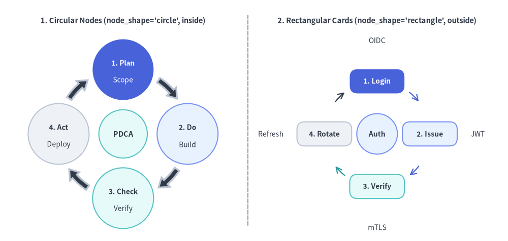
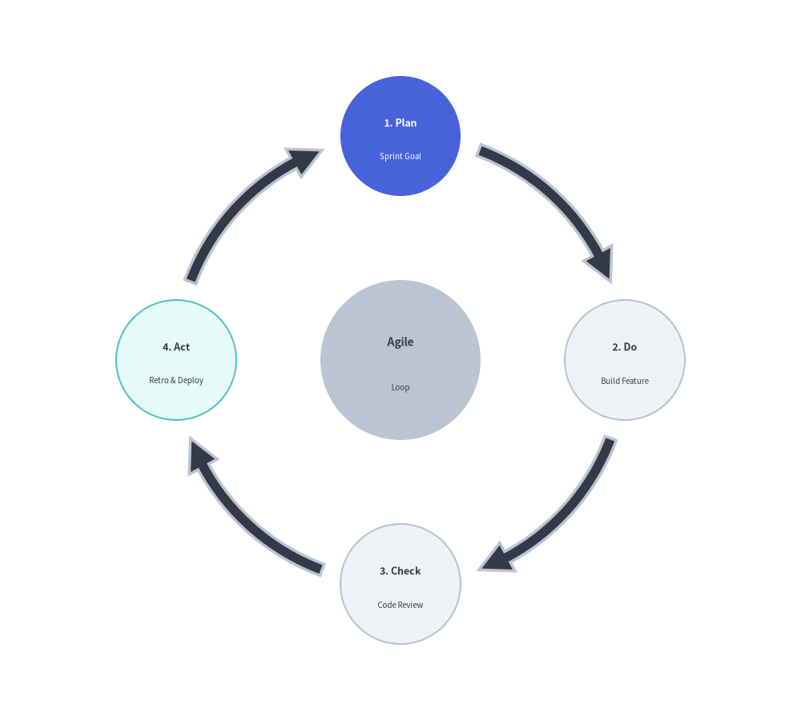
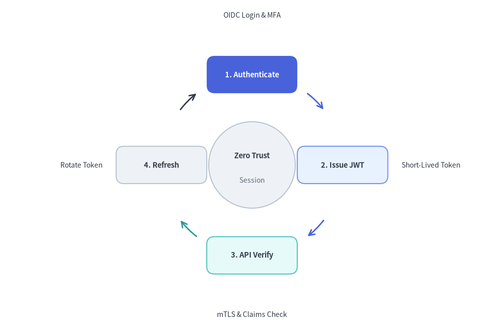

Cycle Component
The Cycle component draws circular, repeating process diagrams and continuous feedback loops.
It is ideally suited for Agile/Scrum iterations, PDCA DevOps lifecycles, incident response loops, and token refresh mechanisms.

Source Code
from drawlib.canvas import save, setup
from drawlib.lines import line
from drawlib.smartarts import Cycle
from drawlib.styles import Styles
from drawlib.text import text
setup(width=130, height=62)
# Left Panel: Circular Node Orbit (node_shape="circle", description_placement="inside")
text((31.5, 56.5), "1. Circular Nodes (node_shape='circle', inside)", style=Styles.DarkBold.patch(text_size=10.5))
c_left = Cycle(
style=Styles.Neutral,
text_style=Styles.DarkBold.patch(text_size=10.0),
description_style=Styles.Dark.patch(text_size=10.0),
arrow_style=Styles.DarkBold,
node_shape="circle",
node_radius=7.8,
description_placement="inside",
arrow_type="arc",
arrow_width=1.4,
arrow_head_width=3.2,
arrow_color_mode="monochrome",
arrow_gap=1.8,
)
c_left.add(
"1. Plan",
description="Scope",
style=Styles.PrimaryFlat,
text_style=Styles.WhiteBold.patch(text_size=10.0),
description_style=Styles.White.patch(text_size=10.0),
)
c_left.add(
"2. Do",
description="Build",
style=Styles.PrimaryNeutral,
text_style=Styles.DarkBold.patch(text_size=10.0),
description_style=Styles.Dark.patch(text_size=10.0),
)
c_left.add(
"3. Check",
description="Verify",
style=Styles.SecondaryNeutral,
text_style=Styles.DarkBold.patch(text_size=10.0),
description_style=Styles.Dark.patch(text_size=10.0),
)
c_left.add(
"4. Act",
description="Deploy",
style=Styles.Neutral,
text_style=Styles.DarkBold.patch(text_size=10.0),
description_style=Styles.Dark.patch(text_size=10.0),
)
c_left.set_center(
"PDCA",
radius=6.2,
style=Styles.SecondaryNeutral,
text_style=Styles.DarkBold.patch(text_size=10.5),
)
c_left.draw(xy=(31.5, 27.5), radius=16.5)
# Center Divider
line((63.5, 4), (63.5, 58), style=Styles.MutedDashed)
# Right Panel: Rectangular Card Loop (node_shape="rectangle", description_placement="outside")
text((96.5, 56.5), "2. Rectangular Cards (node_shape='rectangle', outside)", style=Styles.DarkBold.patch(text_size=10.5))
c_right = Cycle(
style=Styles.Neutral,
text_style=Styles.DarkBold.patch(text_size=10.0),
description_style=Styles.Dark.patch(text_size=10.0),
node_shape="rectangle",
node_size=(14.0, 6.2),
description_placement="outside",
arrow_type="line",
arrow_width=1.6,
arrow_color_mode="match_source",
arrow_gap=1.8,
)
c_right.add(
"1. Login",
description="OIDC",
style=Styles.PrimaryFlat,
text_style=Styles.WhiteBold.patch(text_size=10.0),
description_style=Styles.Dark.patch(text_size=10.0),
)
c_right.add(
"2. Issue",
description="JWT",
style=Styles.PrimaryNeutral,
text_style=Styles.DarkBold.patch(text_size=10.0),
description_style=Styles.Dark.patch(text_size=10.0, halign="left"),
arrow_style=Styles.PrimaryBold,
)
c_right.add(
"3. Verify",
description="mTLS",
style=Styles.SecondaryNeutral,
text_style=Styles.DarkBold.patch(text_size=10.0),
description_style=Styles.Dark.patch(text_size=10.0),
arrow_style=Styles.SecondaryBold,
)
c_right.add(
"4. Rotate",
description="Refresh",
style=Styles.Neutral,
text_style=Styles.DarkBold.patch(text_size=10.0),
description_style=Styles.Dark.patch(text_size=10.0, halign="right"),
arrow_style=Styles.DarkBold,
)
c_right.set_center(
"Auth",
radius=5.2,
style=Styles.PrimaryNeutral,
text_style=Styles.DarkBold.patch(text_size=10.0),
)
c_right.draw(xy=(96.5, 27.5), radius=13.5)
save()
1. Quick Example: Agile Development Cycle
from drawlib.canvas import setup
from drawlib.smartarts import Cycle
from drawlib.styles import Styles
setup(width=115, height=82)
cycle = Cycle(
style=Styles.Neutral,
text_style=Styles.DarkBold.patch(text_size=10.5),
description_style=Styles.Dark.patch(text_size=10.0),
arrow_style=Styles.DarkBold,
clockwise=True,
start_angle=90.0,
node_shape="circle",
node_radius=10.0,
arrow_type="arc",
arrow_width=1.6,
arrow_head_width=4.0,
arrow_color_mode="monochrome",
description_placement="inside",
)
cycle.add(
"1. Plan",
description="Sprint Goal",
style=Styles.PrimaryFlat,
text_style=Styles.WhiteBold.patch(text_size=10.5),
description_style=Styles.White.patch(text_size=10.0),
)
cycle.add(
"2. Do",
description="Build Code",
text_style=Styles.DarkBold.patch(text_size=10.5),
description_style=Styles.Dark.patch(text_size=10.0),
)
cycle.add(
"3. Check",
description="QA Review",
text_style=Styles.DarkBold.patch(text_size=10.5),
description_style=Styles.Dark.patch(text_size=10.0),
)
cycle.add(
"4. Act",
description="Deploy",
style=Styles.SecondaryNeutral,
text_style=Styles.DarkBold.patch(text_size=10.5),
description_style=Styles.Dark.patch(text_size=10.0),
)
cycle.set_center(
text="Agile",
description="Loop",
radius=10.0,
style=Styles.MutedFlat,
text_style=Styles.DarkBold.patch(text_size=11.0),
description_style=Styles.Dark.patch(text_size=10.0),
)
cycle.draw(xy=(57.5, 41.0), radius=24.5)

2. Rectangular Nodes with Outside Descriptions & Line Arrows
By setting node_shape="rectangle" with node_size=(width, height), description_placement="outside", arrow_type="line", and arrow_color_mode="match_source", you can build architectural state loops where rounded rectangular cards are connected by thin arc lines colored after each source stage, with descriptions radiating outward around the perimeter.
from drawlib.canvas import save, setup
from drawlib.smartarts import Cycle
from drawlib.styles import Styles
setup(width=128, height=84)
auth_cycle = Cycle(
style=Styles.Neutral,
text_style=Styles.DarkBold.patch(text_size=10.5),
description_style=Styles.Dark.patch(text_size=10.0),
clockwise=True,
start_angle=90.0,
node_shape="rectangle",
node_size=(23.0, 9.5),
description_placement="outside",
arrow_type="line",
arrow_width=2.0,
arrow_color_mode="match_source",
arrow_gap=3.0,
)
# Top (90 deg) - Hero focal step
auth_cycle.add(
"1. Authenticate",
description="OIDC Login & MFA",
style=Styles.PrimaryFlat,
text_style=Styles.WhiteBold.patch(text_size=10.5),
description_style=Styles.Dark.patch(text_size=10.0),
)
# Right (0 deg) - left-align outside description so it extends cleanly rightward
auth_cycle.add(
"2. Issue JWT",
description="Short-Lived Token",
style=Styles.PrimaryNeutral,
text_style=Styles.DarkBold.patch(text_size=10.5),
description_style=Styles.Dark.patch(text_size=10.0, halign="left"),
arrow_style=Styles.PrimaryBold,
)
# Bottom (270 deg)
auth_cycle.add(
"3. API Verify",
description="mTLS & Claims Check",
style=Styles.SecondaryNeutral,
text_style=Styles.DarkBold.patch(text_size=10.5),
description_style=Styles.Dark.patch(text_size=10.0),
arrow_style=Styles.SecondaryBold,
)
# Left (180 deg) - right-align outside description so it extends cleanly leftward
rotate_step = auth_cycle.add(
"4. Refresh",
description="Rotate Token",
style=Styles.Neutral,
text_style=Styles.DarkBold.patch(text_size=10.5),
description_style=Styles.Dark.patch(text_size=10.0, halign="right"),
)
# Customize outgoing arrow style on the neutral step via CycleItem mutation
rotate_step.arrow_style = Styles.DarkBold
auth_cycle.set_center(
text="Zero Trust",
description="Session",
radius=11.0,
style=Styles.Neutral,
text_style=Styles.DarkBold.patch(text_size=10.5),
description_style=Styles.Muted.patch(text_size=10.0),
)
auth_cycle.draw(xy=(64, 42), radius=23.0, align="center")
save()

3. Geometry & Coordinate Mechanics
- Anchor Modes (
align="center"vs.align="bottom_left"):align="center"(default):xy=(cx, cy)specifies the exact center hub of the orbit circle.align="bottom_left":xy=(x, y)specifies the bottom-left corner of the cycle's outer bounding box (automatically offsetting the orbit center byradius + node_half_extent + margin).
- Equi-Angular Distribution: Steps are spaced evenly along the orbit circumference of radius
R: $$\theta_i = \text{start_angle} \mp \left(i \cdot \frac{360^\circ}{N}\right)$$ - Node Shapes & Sizing (
node_shape,node_radius,node_size):"circle"(default): Circular step nodes sized bynode_radius(default8.0)."rectangle": Rounded rectangular cards sized bynode_size=(width, height)(default(18.0, 10.0), with default corner radiusshape_r=2.0unless overridden onstyle)."none": Floating text labels without a background shape.
- Description Placement (
description_placement):"inside"(default): Renders both title and description stacked inside the node boundary."outside": Renders the title centered inside the node and places the description radially outside the node along its orbit angle.
- Connector Arrow Types & Coloring (
arrow_type,arrow_color_mode):arrow_type:"arc"(default, curved block arrows),"line"(curved stroke lines with arrowheads), or"none".arrow_color_mode:"match_source"(default): Each connector arrow adoptsshape_fill_colorfrom its originating step (unless overridden byarrow_style)."match_target": Each connector arrow matches the destination step'sshape_fill_color."monochrome": All connector arrows usearrow_style(requiresarrow_styleto be set onCycleor each item).
4. API Reference
Constructor (Cycle)
Cycle(
*,
style: Style,
text_style: Style,
description_style: Style | None = None,
arrow_style: Style | None = None,
clockwise: bool = True,
start_angle: float = 90.0,
node_shape: Literal["circle", "rectangle", "none"] = "circle",
node_radius: float = 8.0,
node_size: tuple[float, float] = (18.0, 10.0),
description_placement: Literal["inside", "outside"] = "inside",
arrow_type: Literal["arc", "line", "none"] = "arc",
arrow_width: float = 2.0,
arrow_head_width: float = 4.5,
arrow_color_mode: Literal["monochrome", "match_source", "match_target"] = "match_source",
arrow_gap: float = 2.5,
center_text: str = "",
center_description: str = "",
center_radius: float = 10.0,
center_style: Style | None = None,
center_text_style: Style | None = None,
center_description_style: Style | None = None,
)
| Parameter | Type | Default | Description |
|---|---|---|---|
style |
Style |
(Required) | Default shape style for perimeter step nodes. |
text_style |
Style |
(Required) | Default text style for primary step titles. |
description_style |
Style | None |
None |
Default text style for secondary descriptions (required when items have description). |
arrow_style |
Style | None |
None |
Default style for connecting arrows (required when arrow_color_mode="monochrome"). |
clockwise |
bool |
True |
If True, steps and arrows progress clockwise; if False, counter-clockwise. |
start_angle |
float |
90.0 |
Angle in degrees for the first step (90.0 is top, 0.0 is right). |
node_shape |
Literal["circle", "rectangle", "none"] |
"circle" |
Shape of perimeter step nodes. |
node_radius |
float |
8.0 |
Radius of perimeter nodes when node_shape="circle". |
node_size |
tuple[float, float] |
(18.0, 10.0) |
(width, height) of perimeter nodes when node_shape="rectangle". |
description_placement |
Literal["inside", "outside"] |
"inside" |
Whether descriptions render inside the node or radially outside. |
arrow_type |
Literal["arc", "line", "none"] |
"arc" |
Connector type: curved block arrow ("arc"), curved line ("line"), or "none". |
arrow_width |
float |
2.0 |
Tail thickness (for "arc") or stroke width (for "line"). |
arrow_head_width |
float |
4.5 |
Arrowhead width when arrow_type="arc". |
arrow_color_mode |
Literal["monochrome", "match_source", "match_target"] |
"match_source" |
Automatic arrow coloring strategy when arrow_style is not explicitly provided. |
arrow_gap |
float |
2.5 |
Clearance margin between node boundaries and arrow endpoints. |
center_text |
str |
"" |
Optional title for the central hub circle (can also be configured via set_center()). |
center_description |
str |
"" |
Optional description for the central hub circle. |
center_radius |
float |
10.0 |
Radius of the central hub circle. |
center_style |
Style | None |
None |
Shape style for the central hub circle (required if center_text is non-empty). |
center_text_style |
Style | None |
None |
Text style for the central hub title (falls back to text_style). |
center_description_style |
Style | None |
None |
Text style for the central hub description (falls back to description_style). |
Adding Steps & Configuring Center Hub (.add(), .set_center(), .items, .center)
cycle.add(
text: str,
*,
style: Style | None = None,
description: str = "",
text_style: Style | None = None,
description_style: Style | None = None,
arrow_style: Style | None = None,
show: bool = True,
) -> CycleItem
| Parameter | Type | Default | Description |
|---|---|---|---|
text |
str |
(Required) | Primary step title text. |
style |
Style | None |
None |
Custom node shape style (falls back to constructor style). |
description |
str |
"" |
Optional secondary description text. |
text_style |
Style | None |
None |
Custom title text style (falls back to constructor text_style). |
description_style |
Style | None |
None |
Custom description text style (falls back to constructor description_style). |
arrow_style |
Style | None |
None |
Custom style for the connector arrow departing from this step. |
show |
bool |
True |
Whether to render this step and its adjacent arrows. Preserves angular positions of all other steps when False. |
cycle.set_center(text, *, style=None, description="", radius=None, text_style=None, description_style=None, show=True) -> CycleCenter: Configures the central hub circle and returns the mutableCycleCentermodel.cycle.items -> list[CycleItem]: Returns all registeredCycleIteminstances (text,style,description,text_style,description_style,arrow_style,show).cycle.center -> CycleCenter: Returns the mutableCycleCentermodel (text,description,radius,style,text_style,description_style,show).
Drawing (.draw())
cycle.draw(
xy: tuple[float, float],
radius: float = 35.0,
align: Literal["center", "bottom_left"] = "center",
scale: float = 1.0,
) -> None
| Parameter | Type | Default | Description |
|---|---|---|---|
xy |
tuple[float, float] |
(Required) | Anchor coordinate (x, y) (orbit center or bottom-left corner depending on align). |
radius |
float |
35.0 |
Orbit radius from the cycle center to each perimeter node center (> 0). |
align |
Literal["center", "bottom_left"] |
"center" |
Anchor alignment mode ("center" or "bottom_left"). |
scale |
float |
1.0 |
Proportional scale factor around xy (> 0). |